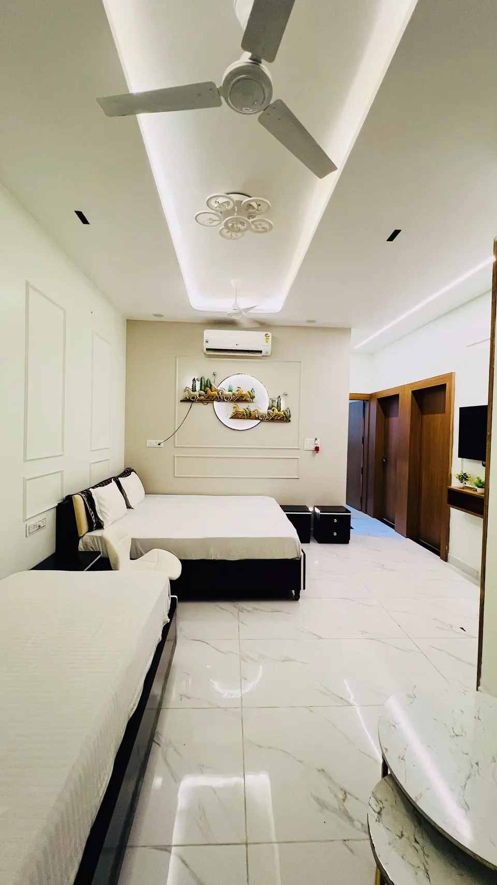
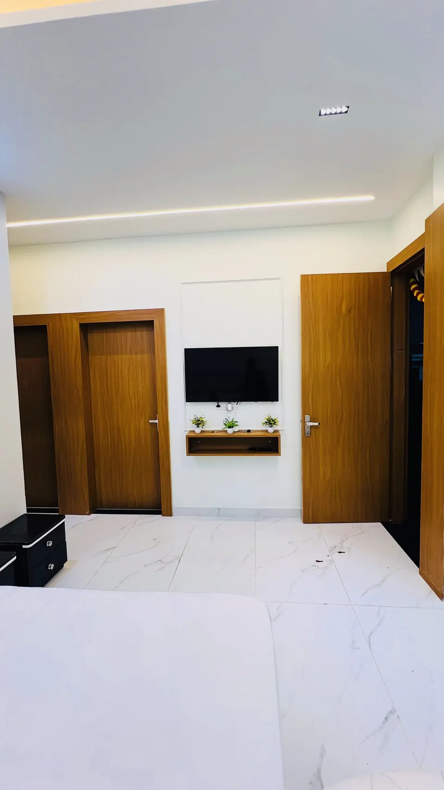

Kartik Purnima Ujjain 2026: Dates, Snan and Festive Details

Kartik Purnima 2026 falls on Tuesday, 24 November. In Ujjain the day begins with a dawn bath in the Shipra, usually at Ram Ghat, and ends with lamps (deep daan) at the river and in the temples. Using New Delhi timings, the Purnima tithi runs from 11:42 PM on 23 November to 8:23 PM on 24 November, so the full moon is with you all day.
We have welcomed many families for this day, and the question we hear most is simple: "What do we actually do, and when?" This guide gives the date, the sourced timings, the rituals in plain words, and how to keep the day gentle for parents and children. Where a source does not give an Ujjain-specific time, we say so.
Kartik Purnima 2026: the date and the tithi
Most sources agree on Tuesday, 24 November 2026. Haindavam, which uses Ujjain's time zone, gives the same date and says the Purnima tithi ends at 8:23 PM. Hindu Tone and SmartPuja give the full window for New Delhi: it begins at 11:42 PM on 23 November and ends at 8:23 PM on 24 November.
What about moonrise?
The sources give different moonrise times because they use different cities (about 5:22 PM for Hyderabad in one, around 4:56 PM in another). We therefore do not quote a moonrise time for Ujjain. If your vrat is broken at moonrise, ask your pandit ji or check a local panchang.
If you see 23 November somewhere
Hindu Tone notes that families in parts of North America observe it on Monday, 23 November, because of the time difference. For Ujjain, 24 November is the day to plan around. Please verify before you travel.
What Kartik Purnima means
The day carries several traditions at once. Hindu Tone links it to Shiva's destruction of Tripurasura (hence Tripurari Purnima), the end of the Kartik snan in North India, and Vishnu's Matsya avatar. SmartPuja adds that Vaishnavas close the Kartik vrata with Radha-Krishna observances, and that the day often ends the Tulsi Vivah celebrations. It is also called Dev Deepawali, the Diwali of the gods.
For a Shiva devotee in Ujjain, the Tripurari side feels especially close. You are in the city of Mahakal, and a lamp offered to the river on this evening is a quiet way of joining a very old tradition. You do not need to know every katha to take part.
The Shipra snan at Ram Ghat
The classic rite is a holy bath at dawn, in a river, a lake or a temple tank, or at home before sunrise (Hindu Tone). SmartPuja says that where a river is not possible, adding a little Ganga jal to the bathwater at home is accepted. In Ujjain, the river is the Shipra, and Ram Ghat is where most families go.

Neither guide gives a Ujjain-specific bathing window, so we suggest asking your pandit ji for the exact muhurat. Our practical advice:
- Go early and keep the group small. Ghat steps are wet and can be slippery for grandparents.
- Carry a dry towel, a change of clothes and a shawl. November mornings in Ujjain are cool.
- Agree a meeting point before you enter the crowd, and keep valuables in the villa.
- If your elders cannot manage the steps, a bath at home is a valid way to keep the vow.
Deep daan: lamps at dusk
The evening belongs to the lamps. Hindu Tone describes offering lamps at water bodies, temples, the tulsi plant and the home doorway, and SmartPuja says to light them at dusk and moonrise. In Ujjain this means diyas offered at the Shipra ghats and lit at temples.
Our earlier guide to Ujjain in November 2026 has more on the month. Our advice here is the same: go to the ghat in the early evening rather than at the busiest hour, buy your diyas from the stalls nearby, and keep a hand on little ones near the water.
Puja, vrat and charity at home
The guides describe a simple day that you can keep wherever you stay:
- Worship: Vishnu with tulsi and Shiva with bilva leaves, water and milk (Hindu Tone); a Satyanarayan or Lakshmi-Vishnu puja is common.
- Vrat: a fast or one simple meal. Haindavam says devotees end the fast once the moon has been sighted. Hindu Tone advises a light observance if you have health concerns, and we agree, especially for elders on medication.
- Daan: food, clothes, grain or money to those in need.
- Conduct: sattvic food, with no meat or alcohol if you are fasting (SmartPuja).
Because every villa of ours has a kitchen, families often cook their own satvik meal. A local cook can be arranged for simple home-style thalis on request.
The night before: Vaikuntha Chaturdashi and Hari-Har Milan
Hindu Tone places Vaikuntha Chaturdashi on Monday, 23 November, the day before Kartik Purnima. In Ujjain this is the night of Hari-Har Milan, when Shiva and Vishnu are honoured together. Our Hari-Har Milan 2026 guide covers the procession in detail. Treat it as a real choice: a late procession night followed by a pre-dawn snan is a lot for most families, so decide which of the two matters more to you.
Mahakal darshan around the festival
Darshan continues as usual, but expect more families on 23 and 24 November. The temple's winter routine began in Kartik, and our winter aarti timings guide lists the current schedule as reported. The official Shri Mahakaleshwar portal is the final word on darshan and Bhasma Aarti permits. For the permit steps, see our Bhasma Aarti booking guide.
Getting around is easy if you plan it: our travel page covers transport and day trips, and our contact page answers common booking questions.
A gentle plan for the two days
Monday, 23 November
Arrive, rest and visit Mahakal in the afternoon. In the evening, decide whether you will watch Hari-Har Milan from a comfortable distance or sleep early for the snan.
Tuesday, 24 November
Dawn snan at Ram Ghat with a small group, then breakfast and rest at the villa. Keep the afternoon free. Return to the ghat in the early evening for deep daan, and end with a simple satvik dinner.
Where to stay near Mahakaleshwar for Kartik Purnima
All five AP Villas are within 2 km of Mahakaleshwar Jyotirlinga, about 6 minutes by car or 12 minutes on foot, with a complimentary Mahakal shuttle for in-house guests.
Rudrangan Suites: a calm base after a long festival day



Rudrangan Suites is the newest of our villas, opened in 2026, with designer finishes, premium linens and garden seating for quiet evenings after the ghat. It has 3 bedrooms and sleeps 6, from ₹5,200 per night. There is a lift and the stay is wheelchair friendly, which matters when grandparents are travelling, and pets are welcome. The kitchen has an induction cooktop, microwave and mini fridge, so you can cook your vrat meal. Check-in is at 10:30 AM, and check-out is at 9:30 AM.
If your group is larger
- Divinestay: 3 bedrooms, sleeps 8, from ₹5,500 per night, with a private rooftop.
- Om Shanti Stay: 2 bedrooms, sleeps 6, from ₹4,500 per night.
- AP Suite: 2 bedrooms, sleeps 4, from ₹4,200 per night.
Our caretaker explains the Bhasma Aarti booking process on your arrival evening, and the shuttle drops you at the temple gate by 3:30 AM for the 4 AM aarti. As the winter timing can be later, we confirm the current time with you. See all five on our villas page. Festival dates may carry different cancellation terms, which we confirm on WhatsApp.
Frequently asked questions
When is Kartik Purnima in 2026?
Kartik Purnima falls on Tuesday, 24 November 2026. Using New Delhi timings, the Purnima tithi runs from 11:42 PM on 23 November to 8:23 PM on 24 November, so the dawn bath and the evening lamps both happen on the 24th. Ujjain's own panchang may differ by a few minutes, so confirm with your pandit ji.
Where do people take the Kartik Purnima snan in Ujjain?
Devotees bathe in the Shipra river, and Ram Ghat is the best-known ghat for it. The bath is traditionally taken at dawn, before sunrise. Many families go early with a small group and keep elders close to the railings. If the river feels too crowded, the guides also describe a bath at home before sunrise.
Is Kartik Purnima the same as Dev Deepawali?
Yes. Sources describe Kartik Purnima as Dev Deepawali, the Diwali of the gods, and also as Tripurari Purnima, for Shiva's victory over the demon Tripurasura. Dev Deepawali is most famous for the lit ghats of Varanasi, but lamps are offered on the same day at rivers and temples, and Ujjain's Shipra ghats are no exception.
Will Mahakaleshwar be crowded on Kartik Purnima 2026?
We expect more families than usual around 23 and 24 November, because Vaikuntha Chaturdashi and Hari-Har Milan fall the night before. We cannot give a crowd number, and the temple decides darshan arrangements. Plan one main darshan, book your Bhasma Aarti permit early if you want it, and check the official portal.
Which dates should I book a stay in Ujjain for Kartik Purnima?
Most families arrive on 22 or 23 November, to see Hari-Har Milan on the night of the 23rd and take the snan on the 24th. Festival dates may carry different cancellation terms with us, which we confirm on WhatsApp. Message early so we can tell you honestly what is free.
Sources
- Hindu Tone: Kartik Purnima 2026, date, snan, deep daan and puja vidhi
- Haindavam: Kartika Purnima 2026 (Ujjain)
- SmartPuja: Kartik Purnima 2026
- Shri Mahakaleshwar temple: official portal
Timings, prices and dates change, especially on festival days. Please verify before you travel with the official temple or government site.
If Kartik Purnima is calling your family to Ujjain, write to us and we will tell you honestly what is available and how to plan the days.
— Apoorv, Founder, AP Villas & Resorts